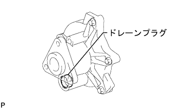

エンジンルーム目視点検
エンジンルーム内およびフード裏のVベルト周回上に大量の冷却液が付着している。
液状の冷却液がウォータポンプ周辺に滴下している。
リザーブタンク内の冷却液量が下限以下で、且つウォータポンプ周辺に漏れ跡がある。
- □ 参 考 □
- 上記のいずれかに該当する場合はウォータポンプASSYを交換する。
- 該当しない場合は以下の点検(ウォータポンプ周り点検)を実施する。
ウォータポンプ周り点検
- □ 参 考 □
- ウォータポンプのドレーンプラグ付近に付着した冷却液(固形物)の状態を確認する。
Vベルトを取りはずす。(要領は
 参照)
参照)ウォータポンププーリを取りはずす。(要領は
参照)ウォータポンプのドレーンプラグ、またはドレーンプラグ縁部分に付着した冷却液(固形物)にペーパータオルを押し当てペーパータオルの状態を確認する。
- □ 参 考 □
- ペーパータオルが濡れる場合は、ウォータポンプASSYを交換する。
- ペーパータオルが濡れない場合は、ウォータポンプ周辺をきれいに清掃する。
|  |
ウォータポンププーリを取り付ける。(要領は参照)